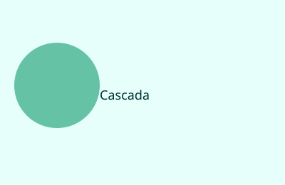
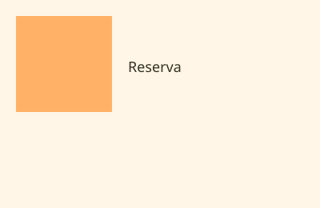
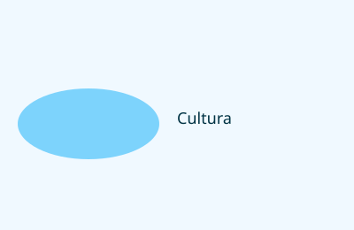
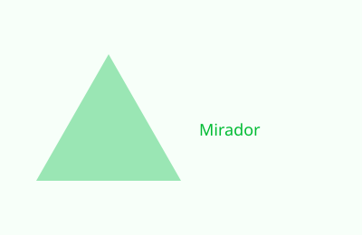
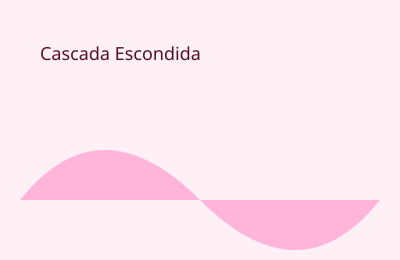
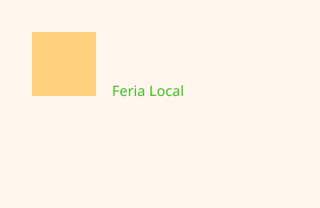

Cascada Los Cóndores
Ubicación: Sector El Cóndor.
Actividad: Senderismo, fotografía y picnic.
Un escenario natural con una caída de agua espectacular y un ambiente ideal para conectar con la selva.
Lugares turísticos
Macas ofrece paisajes amazónicos, senderos de aventura, comunidades indígenas y rincones con una historia rica y multifacética.

Ubicación: Sector El Cóndor.
Actividad: Senderismo, fotografía y picnic.
Un escenario natural con una caída de agua espectacular y un ambiente ideal para conectar con la selva.

Ubicación: Valles cercanos a la ciudad.
Actividad: Trekking y observación de aves.
Rutas rodeadas de vegetación densa y fauna diversa, perfectas para excursiones de un día.

Ubicación: Centro del cantón Macas.
Actividad: Artesanías, danzas y talleres locales.
Un espacio para comprender la identidad de la comunidad Shuar y su riqueza cultural.

Ubicación: Colinas al oeste de la ciudad.
Actividad: Miradores panorámicos y descanso.
Desde aquí se aprecian paisajes impresionantes y el valor estético de la Amazonía.

Ubicación: Ruta rural de la zona.
Actividad: Baños naturales y senderismo.
Un sitio íntimo y refrescante donde el visitante puede disfrutar de pozas y paisajes selváticos.

Ubicación: Plaza central y alrededores.
Actividad: Gastronomía y compra artesanal.
El encuentro perfecto con sabores regionales, tejidos, tallados y productos sostenibles locales.